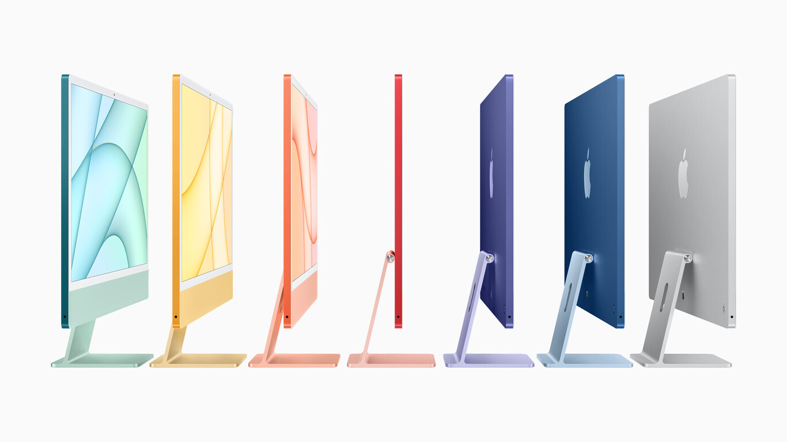
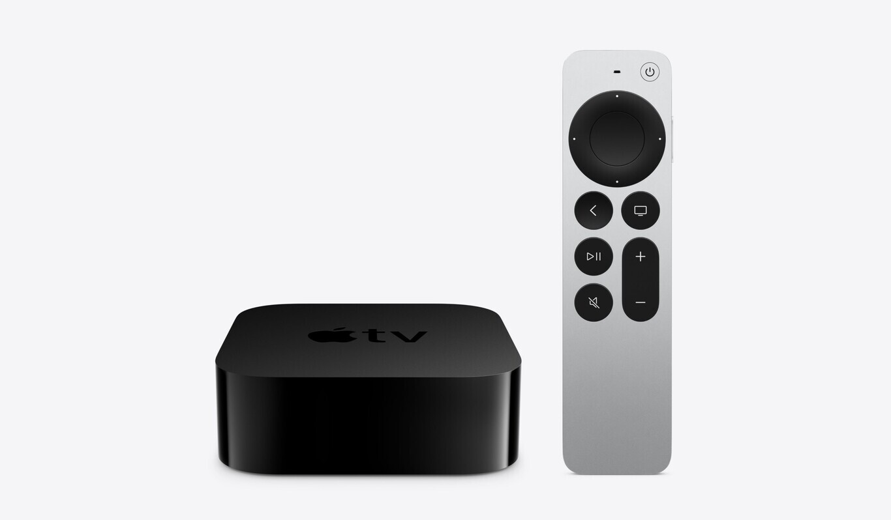

Apple acaba de desvelar numerosas novedades en su evento de primavera. La compañía ha retirado la cortina de nuevos equipos que se han desplegado ante el público a una velocidad endiablada. Tal y como acostumbra en presentaciones de este tipo. Tenemos cuatro productos que han protagonizado el evento sin ninguna duda y que podemos ver a continuación.
Tim Cook y el resto de su equipo se han encargado de presentarnos nuevos productos que van a dar mucho que hablar. El más destacado sin duda ha sido el nuevo iMac 2021, que con su diseño rompe esquemas de lo que se puede esperar de un equipo de sobremesa.
Este nuevo iMac estrena un diseño de perfil delgadísimo para su pantalla de 24 pulgadas. Cuenta con nuevos periféricos Magic Mouse y Magic Keyboard, que van a juego con uno de los siete colores del nuevo equipo. Esto es posible gracias al M1, que Apple ha incorporado al iMac 2021 para adelgazar y rediseñar el interior por completo.

El nuevo iPad Pro 2021 también es el otro protagonista del evento de Apple. La compañía ha incorporado un procesador M1 también a este dispositivo, unificando el silicio de ambas familias de productos. El modelo de 12,9 pulgadas trae además una pantalla mini-LED que se compara directamente con los paneles de la XDR Pro Display.
